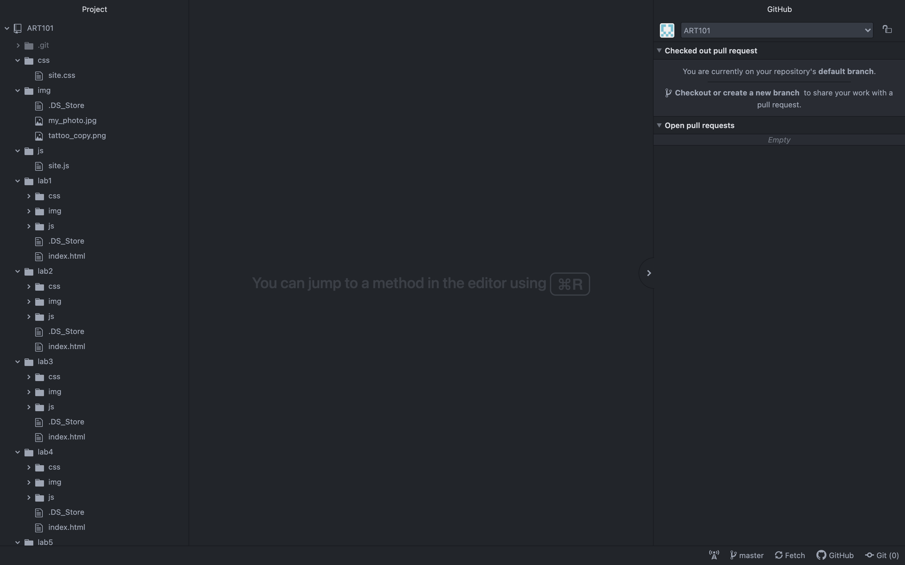
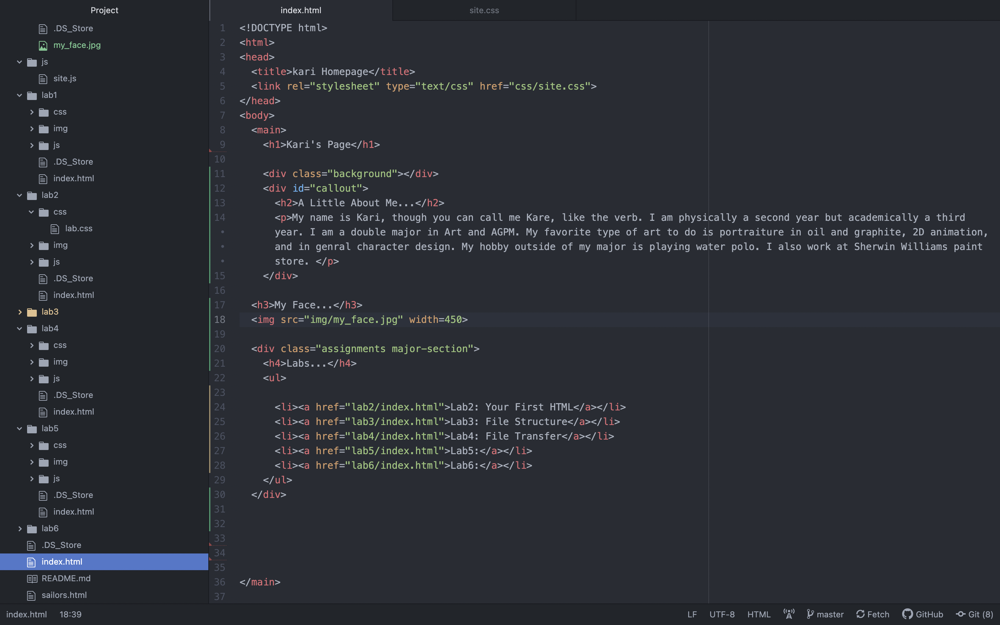

Lab 3: File Structures
The idea of this lab was to further create a local file structure on my computer and add intex.html files.
Challenges
I found that working with the file structure wasn't too complicated. I mainly just had difficulties making sure all my css files were working correctly.
Results
These are the index.html file I created and the structure that I made:
 